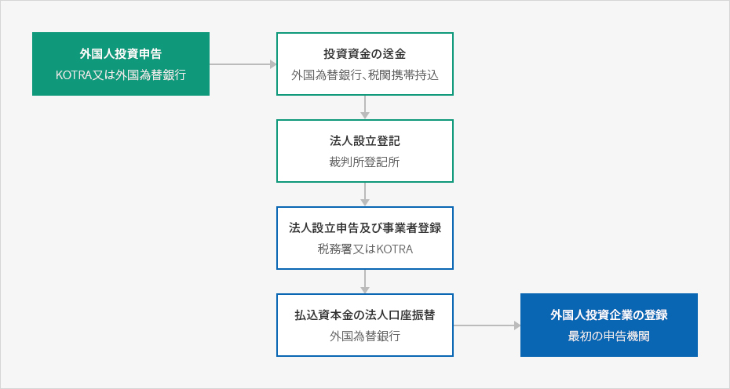

外国人投資地域など産業部の制度
- Home
- 投資環境
- 支援制度
- 外国人投資地域など産業部の制度
外国人直接投資
外国人直接投資(FDI : Foreign Direct Investment)とは、外国人が経営への参加や技術提携など国内企業と持続的な経済関係を築く目的で国内企業の株式又は持分を取得することを言います。外国人直接投資の類型
- 国内企業の株式又は持分の取得
- 非営利法人に対する出捐
- 長期借款(持分出資及び外国人投資企業登録後に可能)

外国人直接投資の手続き
外国人投資の手続きは大きく、外国人投資申告、投資資金の送金、法人設立登記及び事業者登録、外国人投資企業の登録の4段階で構成されています。


- 外国人投資申告(KOTRA又は外国為替銀行)
- 投資資金の送金(外国為替銀行、税関携帯持込)
- 法人設立登記(裁判所登記所)
- 法人設立申告及び事業者登録(税務署又はKOTRA)
- 払込資本金の法人口座振替(外国為替銀行)
- 外国人投資企業の登録(最初の申告機関)

投資総合相談室 利用案内(KOTRA)
代表番号 1900-7119- 運営時間 : 月-金 9:00～18:00(昼休み12:00～13:00)
- FAX : (82-2)3497-1611
- 対応言語 : 韓国語、英語、中国語、日本語